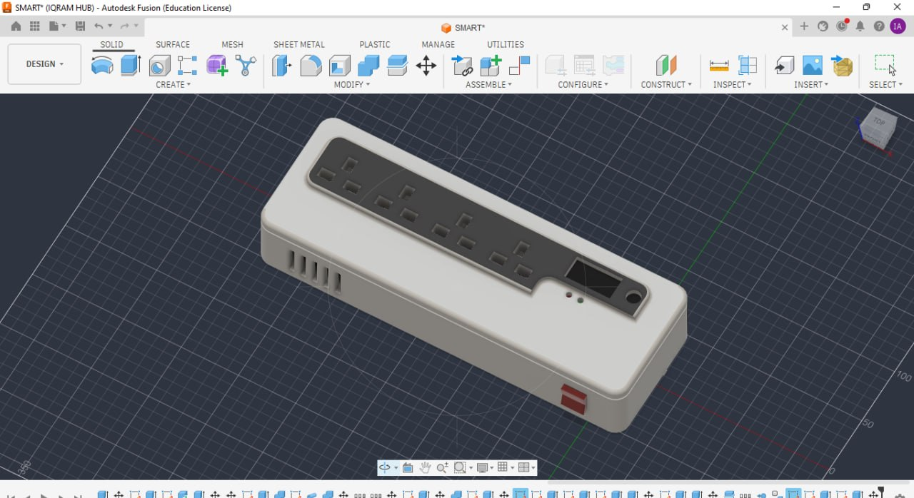

01 / PROJECT
Smart Power Hub
An extension-board prototype developed from an original concept with remote control, scheduling, monitoring, and safety sensing.
View project →Mechanical engineering student
Level 200 BSc Mechanical Engineering student at the University of Energy and Natural Resources, building capability in CAD modelling, mechanical systems, prototyping, and hands-on workshop practice.

Latest updates
Recent engineering moments, project milestones, and practical build updates from the current portfolio.
Featured projects
01 / PROJECT
An extension-board prototype developed from an original concept with remote control, scheduling, monitoring, and safety sensing.
View project →
02 / PROJECT
A hands-on robotics project focused on observing physical behaviour and improving an idea through experimentation.
View project →
03 / PROJECT
A detailed assembly study exploring components, fastening, motion, and how a mechanical object comes together.
View project →
04 / PROJECT
A final-semester group build combining circuit stages into a documented alarm system.
View project →My skills & tools
Real capabilities represented by the work in this portfolio, developed through study, projects, and practical making.

About me
My interest lives at the intersection of engineering, design, and making. I enjoy the process of understanding a challenge, exploring possibilities, and refining the detail until a solution feels both useful and robust.
Whether I’m modelling a part, developing a prototype, or working through a system, I bring focus, patience, and a hands-on approach.
Start a conversation →Engineering archive
A grouped record of retained portfolio media, arranged by project, event, and learning experience.
Let's connect
Available for engineering conversations, project collaboration, and practical problem-solving opportunities.